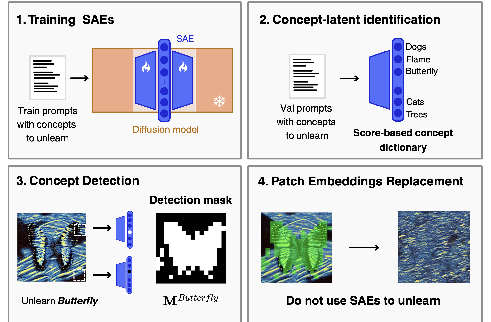
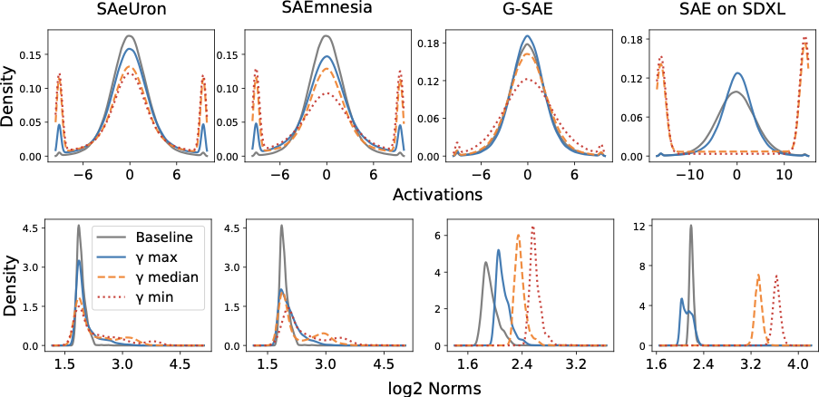
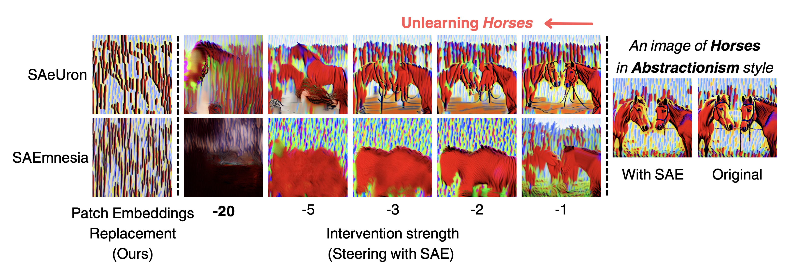

Abstract
- SAE latents reliably detect concepts but steering with them causes OOD activations and visual artifacts
- Patch Embedding Replacement (PER) uses SAEs for detection only — no latent manipulation
- No intervention strength tuning required, eliminating costly grid search
- Plug-and-play improvement on top of SAeUron, SAEmnesia, G-SAE, and SDXL SAE
Method
Core insight: SAEs excel at detecting where a concept lives in a feature map, but steering with negative multipliers pushes activations outside the diffusion model's training distribution — causing severe artifacts. Our method, Patch Embedding Replacement (PER), separates detection from intervention: look with the SAE, don't touch the latent space.

Why Steering Fails: OOD Activations
Multiplier-based interventions push activations well outside the diffusion model's training distribution. The plots below show per-dimension activation distributions (top) and L2 norm distributions (bottom) for all four SAE pipelines. Even at the median intervention strength, a large fraction of activations fall outside the original distribution — causing the visual artifacts seen in the qualitative figures.

Results


We evaluate PER on top of four existing SAE-based unlearning pipelines on the UnlearnCanvas object unlearning benchmark. PER consistently reduces the artifact rate (AR) and improves generalization accuracy (GA) across all pipelines without requiring any tuning of intervention strength.
| Pipeline | Method | UA ↑ | IRA ↑ | CRA ↑ | Avg. ↑ | AR ↓ | GA ↑ |
|---|---|---|---|---|---|---|---|
| SAeUron (SD v1.5) | |||||||
| SAeUron | Baseline | 87.16 | 85.57 | 74.14 | 82.29 | 57.0 | 72.47 |
| SAeUron | + PER (ours) | 85.37 | 81.14 | 86.55 | 84.35 | 16.3 | 84.19 |
| SAEmnesia (SD v1.5) | |||||||
| SAEmnesia | Baseline | 94.65 | 91.39 | 88.48 | 91.51 | 49.8 | 81.18 |
| SAEmnesia | + PER (ours) | 91.37 | 91.92 | 97.97 | 93.45 | 15.5 | 91.44 |
| G-SAE (SD v1.5) | |||||||
| G-SAE | Baseline | 78.14 | 96.14 | 95.56 | 89.94 | 43.1 | 81.69 |
| G-SAE | + PER (ours) | 94.02 | 96.11 | 95.87 | 95.33 | 22.5 | 90.88 |
| SAE on SDXL Turbo | |||||||
| SDXL SAE | Baseline | 95.00 | 5.00 | — | 50.0 | 61.0 | 46.33 |
| SDXL SAE | + PER (ours) | 94.31 | 35.41 | — | 73.86 | 8.0 | 79.90 |
Table 1 — UA: Unlearning Accuracy. IRA: In-Domain Retain Accuracy. CRA: Cross-Domain Retain Accuracy. AR: Artifact Rate (Qwen2-VL-7B; ↓ = fewer artifacts). GA: Generalization Accuracy. Best result per pipeline in bold.
Adversarial Robustness
Evaluated with UnlearnDiffAtk (5-token adversarial prefixes, 40 iterations). PER applied to the SAEmnesia pipeline achieves the lowest attack effectiveness, improving robustness while preserving unlearning performance.
| Pipeline | Method | UA before attack ↑ | UA after attack ↑ | Attack Effectiveness ↓ |
|---|---|---|---|---|
| SAeUron | Baseline | 83.70 | 34.20 | 49.50 |
| SAeUron | + PER (ours) | 84.60 | 28.30 | 56.30 |
| SAEmnesia | Baseline | 97.60 | 57.50 | 40.10 |
| SAEmnesia | + PER (ours) | 91.10 | 56.20 | 34.90 |
Table 2 — Adversarial robustness on UnlearnDiffAtk. Lower attack effectiveness means the unlearning holds up better under adversarial pressure.
Acknowledgements
We acknowledge the CINECA award under the ISCRA initiative for the availability of high performance computing resources and support.
This work builds upon SAeUron by Cywiński et al. and SAEmnesia by Cassano et al. We thank the authors for releasing their code and pre-trained models.
Citation
If you find this work useful in your research, please cite:
@inproceedings{
cassano2026saemnesia,
title={{SAE}mnesia: Erasing Concepts in Diffusion Models with Supervised Sparse Autoencoders},
author={Enrico Cassano and Riccardo Renzulli and Marco Nurisso and Mirko Zaffaroni and Alan Perotti and Marco Grangetto},
booktitle={Forty-third International Conference on Machine Learning},
year={2026},
url={https://openreview.net/forum?id=Pa6EoOViOq}
}